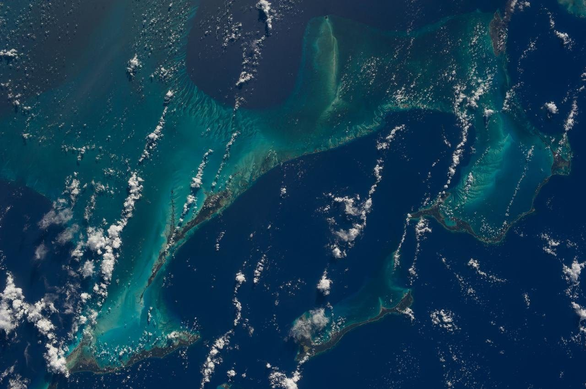

Science
Reading the sea from orbit

From four hundred kilometres up, the shallow banks look painted on. The turquoise is sand under a few metres of water, and the deep blue around it is the ocean falling away to thousands of metres.
Crews on the station photograph the same reefs year after year, and scientists use the pictures to follow how the sand moves after each storm season.
“The colour tells you the depth before any instrument does.”
The same trick works from a plane window on a clear day, if you know where to look.